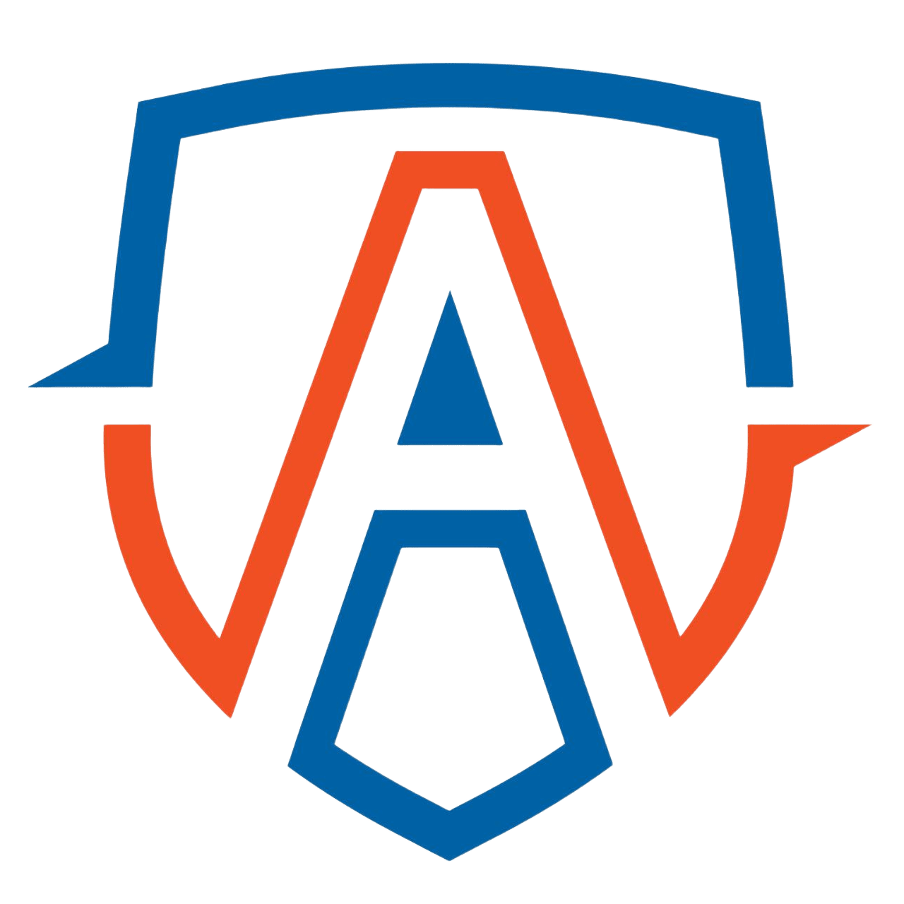
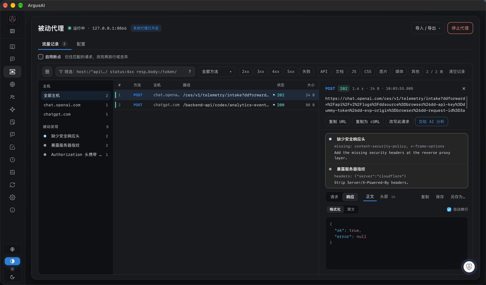
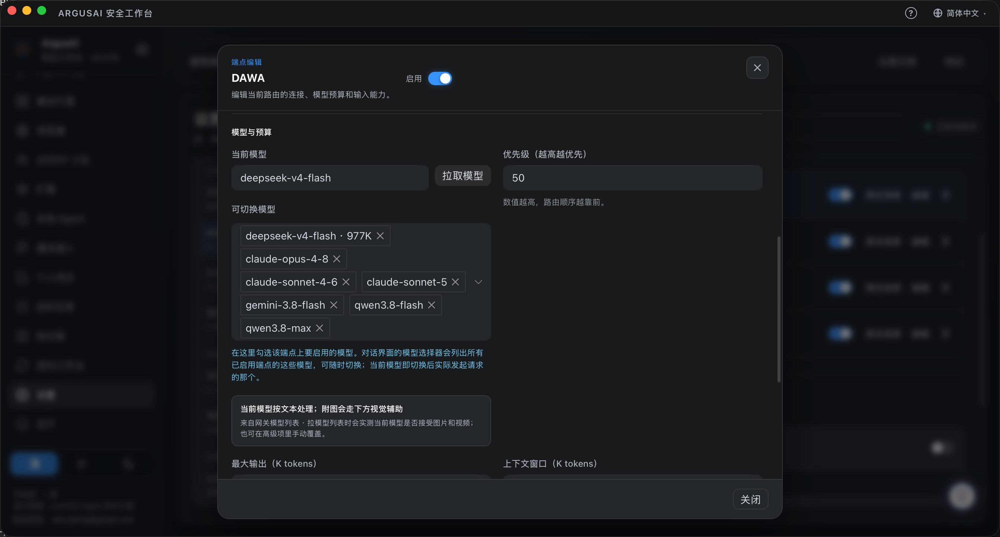

理解现场
理解当前页面、任务、样本和工作状态，不必反复复制上下文。

ARGUSAIArgusAI 把 Agent 放进真实工作台：它能组织扫描、浏览器、代理流量、逆向工具、证据与定时任务，围绕一个目标持续推进，直到形成可复核的交付。

大多数“AI 逆向工具”停在解释代码、生成建议。ArgusAI 的 Agent 能看到当前任务、浏览器、代理流量、逆向样本和历史证据，并在授权边界内调用工具继续执行。
理解当前页面、任务、样本和工作状态，不必反复复制上下文。
扫描、浏览器、代理、文件、逆向 CLI 与桌面协作统一编排。
单轮可持续多次模型与工具调用，待办、检查点和证据跨轮延续。
Case、Artifact、Evidence 与发现相互关联，结论能够回到原始材料。
你给目标、材料和边界。Agent 负责拆解、执行、观察、归档，并在需要时向你请求确认。
可配置多个 AI 端点与模型路由，按模型能力自动适配上下文预算，并保留手动覆盖。任务、数据、工具权限和确认策略留在你的工作区。

能力不是散落的功能列表。每个方向都可以被 Agent 组织成一条有目标、有边界、有证据的工作流。
主动检查、浏览器观察、代理重放与访问控制复核围绕同一目标协作。
JS、WASM、APK、IPA、PE、ELF 和 HAR 进入统一 ReverseJob 与证据链。
整理日志、流量与告警，关联时间、账号、IP、进程和请求标识，持续对比基线。
Python Check、Agent Tool、Markdown Skill、MCP 与本地 Agent 可以继续扩展。
ArgusAI 是本地优先的桌面工作台。企业可以接入自有端点、本地大模型和内网工具，把敏感代码、流量、样本和调查材料留在受控环境中。